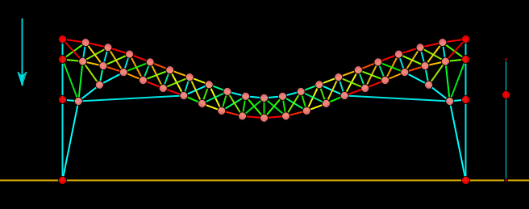
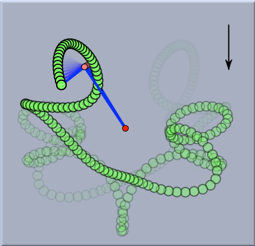
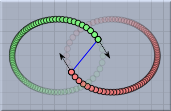
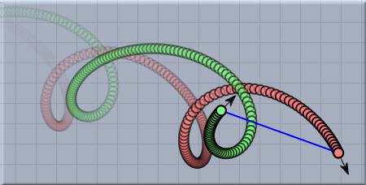

バネ
CindyLab で、バネは ゴムバンド
Rubber Bandとよく似ています。 バネは 直線を加えるモードのように、マウスボタンを押し、ドラッグし、離すという動作によって作成されます。バネの端点がすでに描かれた点ではない場合は、自由質点が付け加えられます。バネは2つの端点に対して力を及ぼします。ゴムバンドと異なり、バネは力がゼロの自然長を持ちます。2つの端点の間の距離が自然長より小さいならば反発し、自然長より大きいならば引きあいます。力は次の式によって計算されます。
ここで、 |x| は、ここでは、xの絶対値を意味します。 "バネ定数" はインスペクタで調整することのできるバネ特有の定数で、"自然長" はバネが静止しているときの長さ、 "長さ" は2点間の距離です。バネはインスペクタによっていろいろなバリエーションを持つことのできる非常にパワフルなものです。そこで、バネのいろいろな可能性を議論する前に、まずインスペクタを見てみましょう。
バネのインスペクタ
バネのインスペクタには、変更可能なものがいくつかあります。 ひとつずつ見ていきましょう。
バネの強さ
バネの強さ(strength)スライダーは"バネ定数"の値を調整するものです。バネによる相互作用がどのようにモデル化されていても、"バネ定数"は最終的に力を増加させるように働きます。したがって、このスライダーをゼロに設定することは、バネを取り外すことに等しくなります。
バネのタイプ
CindyLab では、2点間のすべての相互作用は、内部的にはバネとしてモデル化されます。したがって、異なるタイプの相互作用を切り替えるのが簡単です。これは、インスペクタでバネの種類を選ぶことでできます。現在、4つの異なる相互作用が実装されており、それぞれが特有な振舞いをします。
4つの相互作用は次の通りです。
"ゴムバンド": このタイプでは、バネは長さゼロの自然長をもつとみなされます。したがって、2つの質点間の力は常に引力です。その絶対値は次の式で計算されます。
このタイプは、 ゴムバンド が加えられたときの初期状態です。
"バネ": このタイプでは、バネは正の自然長を持つと見なされます。したがって、2つの質点が自然長よりも遠くにあるならば力は引力になり、自然長よりも近くにあるならば斥力になります。力の絶対値は次の式で計算されます。
このタイプは、バネが加えられたときの初期状態です。
"ニュートン力": このタイプは、2つの物体の間に働く重力のモデルです。この力は、物体の質量とそれらの距離に依存します。それは常に引力です。力の絶対値は次の式で計算されます。
|
力 = バネ定数 ∗ 質量1 ∗ 質量2 / 距離²
|
"クーロン力": このタイプは、帯電した粒子の相互作用のモデルです。この力は粒子の電荷とそれらの距離に依存します。電荷が異符号なら引力、そうでなければ斥力です。力の絶対値は次の式で計算されます。
|
力 = バネ定数 ∗ 電荷1 ∗ 電荷2 / 距離²
|
この力は、 クーロン力 が加えられたときの初期状態です。
自然長
"図から自然長を得る" と "自然長" の2つの項目は、バネが自然長を持つときのみ関連を持ちます。
もし "図から自然長を読む" がチェックされていると、シミュレーションを開始するときに、描画されているバネの長さが自然長として定義されます。したがって、この場合、1個のバネは端点の質点に何の力も及ぼしません。
このボックスがチェックされていなければ、バネの自然長はインスペクタの静止しているときの長さ の値によって定義されます。
バネの動作
バネが自然長を持つときだけ、
振幅(Amplitude) と
位相(Phase) は関連を持ちます。この場合、
CindyLab は、周期的に自然長を変化させるという可能性を提供します。自然長は正弦(sine)関数により、周期的に長くなったり短くなったりします。
自然長の振幅は 振幅 スライダーで調整することができます。他のバネに対する位相は 位相 スライダーで調整することができます。 振動の速さは 環境設定 インスペクタで全体的に調整されます。
例
このような柔軟性により、バネは多くの異なった状況で使われます。ここで、バネの使用を例証するいくつかの例と図を示します。
橋
最初の例は、橋の動きをシミュレートするバネのネットワークです。この例では、すべてのバネの物理的機構は初期状態で使われています。ただし、バネの外観は少し変えられています。通常、バネは小刻みに動くものとして描写されます。この特徴は、インスペクタの表現描写ボタンでオフにすることができます。さらに、
CindyScript で、内部の張力によってバネの色が変わるようになっています。
 |
| バネによって構築された橋 |
二重振り子
次の例は、二重振り子の混沌とした動きを見せます。ここでは、2つのバネがつなげられており、一つの端点が地面に固定されています。バネ定数は、バネが固い棒のように振舞うように比較的高い値に設定されています。図は、重力の影響を受けている二重振り子の動きを示します。
 |
| 二重振り子の混沌とした動き |
二体運動
次の図は、初速度を持ち、互いの重力のもとにある2つの質点を示します。この例のために、バネのタイプはニュートンの法則にセットされています。2つの質点は、互いの周囲を回る2つの星のシステムをシミュレートします。
 | |
 |
二体運動の2つの例
|
バネと CindyScript
他の
CindyLab の要素のように、バネには、
CindyScript によって読み書きできるいくつかの要素があります。次のリストはアクセス可能なバネの要素を示します:
- l: バネの現在の長さ (実数、読み出しのみ)
- lrest: バネの自然長(実数、読み書き可)
- ldiff: 現在の長さと自然長との差 (実数、読み出しのみ)
- potential: バネの位置エネルギー(実数、読み出しのみ)
- pe: バネの位置エネルギー(実数、読み出しのみ)
- strength: バネ定数 (実数、読み書き可)
- amplitude: 振幅 (実数、読み書き可)
- phase: 位相 (実数、読み書き可)
- simulate: シミュレーションの実行/非実行 (ブール値、読み書き可)
次もご覧ください